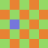

Desktopsuchmaschinen
Desktop-Suchmaschinen ermöglichen das Auffinden bzw. Herausfiltern von Begriffen innerhalb unterschiedlichster Dateitypen. Dazu zählen neben u.a. E-Mails, Messenger-Protokolle und Aufgaben von Termin-Verwaltungsprogrammen wie z.B. Evolution. Allerdings lässt sich unter Umständen technisch nicht jedes vorhandene Detail innerhalb eines Dateityps herausfiltern. Bevor ein Filter- bzw. Suchvorgang gestartet wird, empfiehlt sich eine Indexierung der vorhandenen Dateien.
Einige der nachfolgend aufgeführten Programme indexieren automatisch. Dieser Indexiervorgang kann einen nachfolgenden Suchvorgang beschleunigen. Abhängig von der verwendeten Desktop-Suchmaschine wird das System sehr stark belastet. Unter Umständen besteht auch die Möglichkeit, diesen Indexiervorgang zeitgesteuert oder abhängig von der Systemlast ablaufen zu lassen. Die eigentliche Indexierung läuft in der Regel im Hintergrund als Dienst (daemon) bzw. Hintergrundprozess ab. Einige Desktop-Suchmaschinen bieten die Möglichkeit, die Indexier- und Filtervorgänge verschiedener Dämonen gleichzeitig abzufragen.
Das früher unter Ubuntu vorinstallierte Programm Tracker wurde inzwischen von Zeitgeist abgelöst, während KDE bzw. Kubuntu auf Nepomuk und Strigi setzte, welche ab KDE 4.3 von baloo abgelöst wurden.
Daemonen/Hintergrundprozesse¶
Nepomuk¶
KDE bis Version 4.3 bot mit Archiv/Nepomuk eine Möglichkeit, im Hintergrund Informationen zu sammeln, diese miteinander zu verknüpfen und einheitlich zu verwalten. Daraus resultierte unter anderem eine Desktopsuche im Dateimanager Dolphin. Technisch gesehen war Nepomuk in erster Linie ein Informations-Framework für den semantischen Desktop. Ziele des semantischen Desktops sind die Anreicherung bestehender Daten mit Metadaten (Informationen, die Daten genauer beschreiben), die Verwendung von Zugehörigkeiten/Verhältnissen (z.B. Sohn ist Kind von Vater und Mutter) und die einheitliche Verwaltung dieser Metadaten.
Der Indexer, der diese Daten auffindet, nannte sich Strigi. Trotz des desktop-übergreifenden Konzepts beschränken sich die praktischen Nutzungsmöglichkeiten auf KDE-Programme.
Baloo¶
Als Ersatz für Nepomuk dient seit KDE 4.3 Baloo. Baloo  ist ein Dienst, welcher unter dem KDE Plasma Desktop zur Dateiindizierung und -suche verwendet wird. Baloo bringt dabei ein Framework mit, welches Suchergebnisse präsentieren kann. Er ersetzt den Vorgänger Nepomuk und bietet für eine Übersicht über bereits portierte Programme. Baloo ist aber keine 1:1 - Ersetzung dessen, sondern bietet im Gegensatz zu Nepomuk keine zentrale Datenbank auf Basis von RDF zur Ablage an, sondern speichert Daten in dezentralisierten Plugins.
ist ein Dienst, welcher unter dem KDE Plasma Desktop zur Dateiindizierung und -suche verwendet wird. Baloo bringt dabei ein Framework mit, welches Suchergebnisse präsentieren kann. Er ersetzt den Vorgänger Nepomuk und bietet für eine Übersicht über bereits portierte Programme. Baloo ist aber keine 1:1 - Ersetzung dessen, sondern bietet im Gegensatz zu Nepomuk keine zentrale Datenbank auf Basis von RDF zur Ablage an, sondern speichert Daten in dezentralisierten Plugins.

Tracker¶
Tracker ist ein Werkzeug zum schnellen Auffinden von Dateien. Es durchsucht Dateien, Bilder, Videos, Musik, Textdateien, E-Mails und Chat-Logs sowie Quellcode. Der höchst effiziente Suchdienst läuft im Hintergrund, um die Metadaten in einem automatisch aktuell gehaltenen Index zu speichern. Die Suche selbst kann über die Integration in den Dateimanager Nautilus, Catfish oder über die Kommandozeile erfolgen.
Grafische Programme¶
Catfish¶
Catfish ist ein grafische Oberfläche für verschiedene Suchdienste (enthält aber keinen eigenen). Das Programm gestattet es, schnell und unkompliziert auf der Festplatte nach Dateien und Ordnern zu suchen. Das Programm ist intuitiv zu bedienen. Interessant ist auch die Integration in die Dateimanager Thunar und PCManFM, die keine eigenen Suchwerkzeuge besitzen.
DocFetcher¶
DocFetcher ist eine Desktop-Suchmaschine auf Java-Basis für GTK-basierende Desktop-Umgebungen wie GNOME oder Xfce, die sich auf die Volltextsuche in Textdokumenten beschränkt (keine Bilder, Videos, Mails, usw.). Die Bedienung ist recht einfach und die Indizierung von Ordnern beansprucht üblicherweise nur einige Minuten. Ein nützliches Feature ist die portable Version des Programms: damit kann man ein ganzes Dokumentarchiv mitsamt DocFetcher und Indexen als Ordner frei umher bewegen - gut für USB-Sticks, CD-ROMs oder DVDs. Die portable Version läuft sowohl unter Linux als auch unter Windows, sodass es sich in einem Dual-Boot-System verwenden lässt.

KFind¶
Das KDE-Werkzeug "Dateien suchen" ist sehr nützlich, um einzelne Dateien, die einem bestimmten Muster entsprechen, auf einem Rechner zu finden. Ein Beispiel hierfür könnte die Suche nach Dateien eines bestimmten Typs oder mit bestimmten Buchstaben im Namen sein. Siehe KFind.

Recoll¶
Recoll ist eine ressourcenschonende und schnelle Desktop-Suchmaschine. Sie sucht unter anderem in Text-, HTML- und PDF-Dateien sowie OpenOffice.org Dokumenten und bietet viele Abfragemöglichkeiten. Mit dem Recollrunner gibt es ein PlugIn, welches sich in das KDE-Werkzeug KRunner integriert und die von Recoll erstellte Datenbank abfragt. Gibt man dann in KRunner ein Suchwort ein, erscheinen die indizierten Dateien sofort und man kann sie über KRunner aufrufen.
Zeitgeist¶
GNOME Activity Journal¶
GNOME Activity Journal nennt sich ein grafischer Aufsatz für Zeitgeist. Bei Zeitgeist handelt es sich zwar nicht um eine Desktop-Suchmaschine, könnte aber mit dem Ansatz, ein Protokoll über die Benutzeraktivitäten zu führen, für manche Anwender bereits ausreichen.

Zeitgeist Activity Log Manager¶
Zeitgeist Activity Log Manager ist eine weitere Anwendung für Zeitgeist und eine Alternative/Ergänzung zum GNOME Activity Journal.

Terminal¶
find¶
find ist ein Klassiker für die Kommandozeile, welches nach Dateien im Dateisystem sucht. Im Unterschied zu locate wird keine Datenbank verwendet, wodurch auch neu hinzugekommene Dateien sofort gefunden werden können. Die Suchoptionen lassen sich sehr detailliert einstellen, des weiteren kann für alle gefundene Dateien auch noch eine Aktion (z.B. Umbenennen, Löschen...) festlegen. Das Programm ist in jeder Ubuntu-Installation enthalten und braucht nicht extra installiert werden.
locate¶
locate ist ein Programm, mit dessen Hilfe man nach Dateien suchen kann. Hierbei wird aber nicht das gesamte Datenverzeichnis durchsucht (wie bei find), sondern eine Datenbank, die zuvor angelegt wurde. Diese wird automatisch regelmäßig aktualisiert, damit das Programm immer die korrekten Orte anzeigt, an denen sich die Dateien befinden. Der Vorteil dieser Methode besteht darin, dass das Durchsuchen der Datenbank sehr schnell geht und die Suchergebnisse praktisch sofort zur Verfügung stehen. Dem steht entgegen, dass beispielsweise neu installierte Programme bzw. deren Dateien erst mit einer gewissen Verzögerung in den Suchindex aufgenommen werden.
grep¶
Während find und locate sich auf die Suche nach Dateien beschränken, kann grep die Inhalte von Textdateien auswerten.
doodle¶
doodle (nicht Doodle.com  !) nutzt die in vielen Dateien enthaltenen Metadaten und besteht aus zwei Komponenten:
!) nutzt die in vielen Dateien enthaltenen Metadaten und besteht aus zwei Komponenten:
Vom Konzept her ähnelt es locate, das Dateien aber nicht inhaltlich analysieren kann.
Links¶
FSearch
- in Entwicklung befindliche Desktop-Suchmaschine mit GTK3-OberflächeANGRYsearch
- grafische DateisuchePuggle
- Desktopsuchmaschine auf Java-Basis, kann auch nach Bildern und Audiodateien suchenXena
- Langzeitarchivierung mit integriertem BetrachterMedienverwaltung - Kataloge erstellen
- Erstellt mit Inyoka
-
 2004 – 2017 ubuntuusers.de • Einige Rechte vorbehalten
2004 – 2017 ubuntuusers.de • Einige Rechte vorbehalten
Lizenz • Kontakt • Datenschutz • Impressum • Serverstatus -
Serverhousing gespendet von